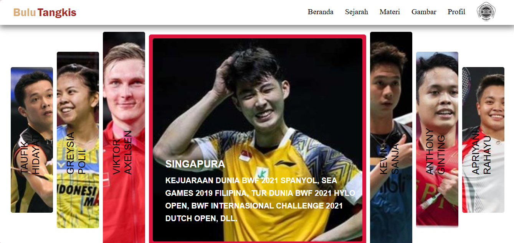
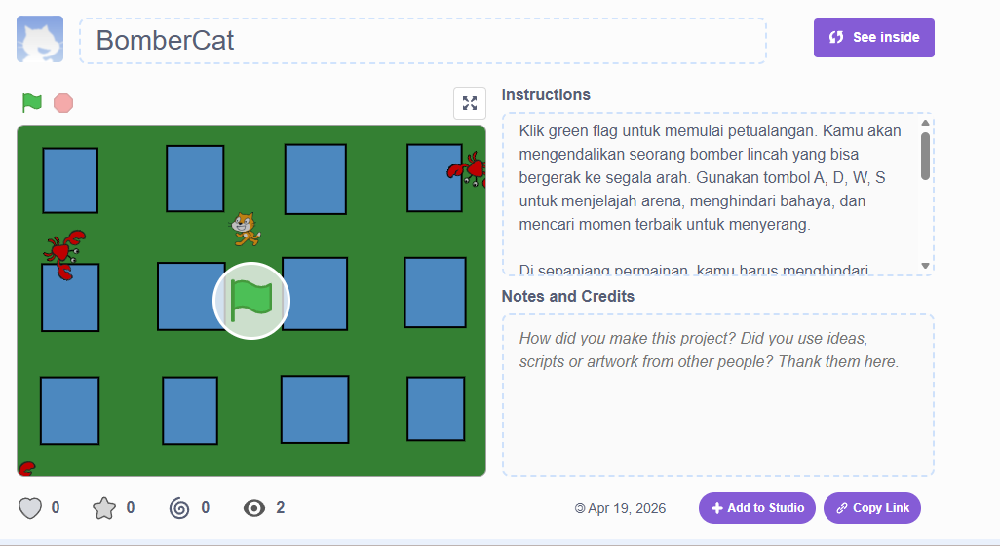
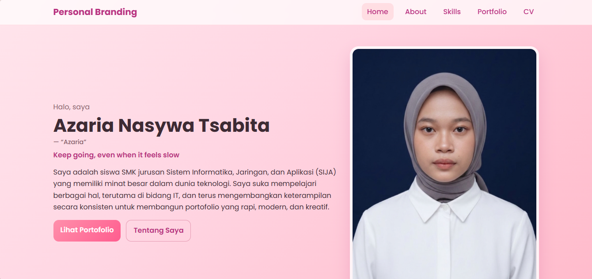
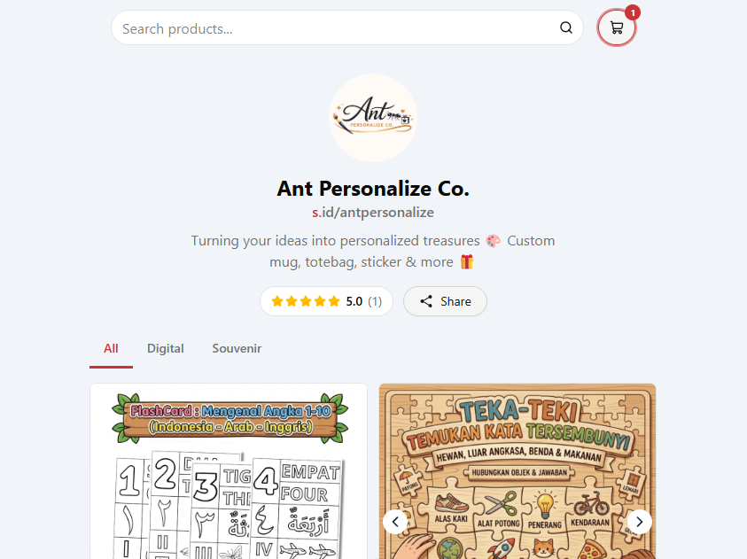
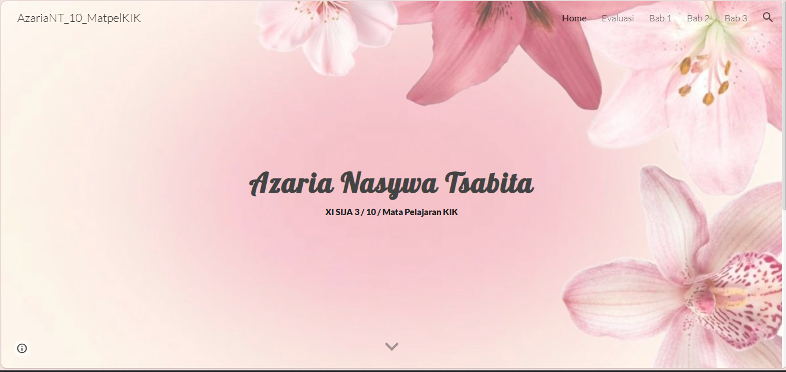
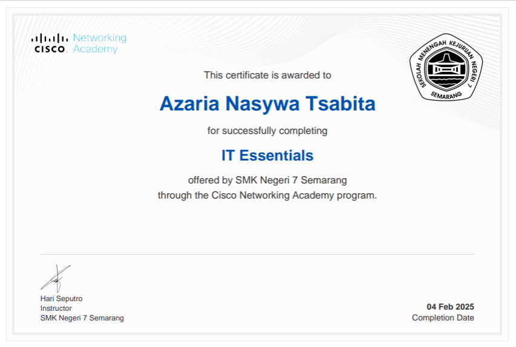
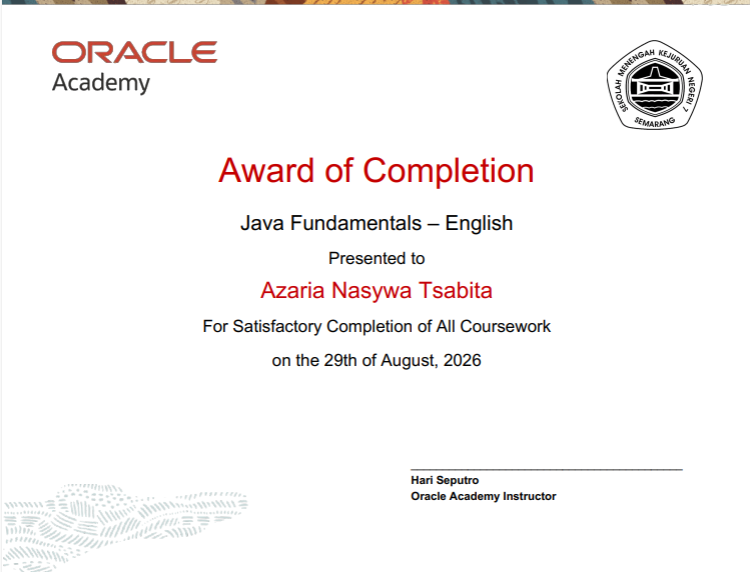
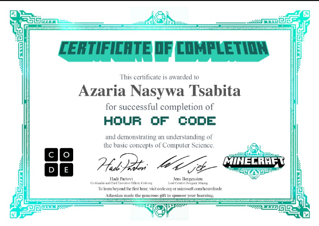

Web Dev
Web Dev
Semarang City Website
An informative group project website about Semarang City, featuring tourist destinations, culinary spots, and general city information.
Visit Project →A collection of my projects and certifications.
Web Dev
An informative group project website about Semarang City, featuring tourist destinations, culinary spots, and general city information.
Visit Project → Game
Game
A simple Scratch-based game where players catch falling objects to get the highest score possible.
Visit Project →
Web DevMy very first website project — covering badminton from its history and techniques to international tournaments.
Visit Project →
GameA Scratch-based action game: dodge enemies while dropping bombs to defeat them, featuring a live-health and score system.
Visit Project →.png) Design
Design
Modern logo designs with gradient effects, creating an aesthetic and professional look using graphic design tools.
Visit Project → Web Dev
Web Dev
A educational web portal covering the 1998 Reformation Era's
Visit Project →
Web DevA personal branding website featuring my bio, personal interest, skills, and simple projects.
Visit Project →
DesignAn online storefront featuring kids' educational worksheets and custom digital design products
Visit Link →
DesignA Google Sites portfolio dedicated to organizing coursework, chapter materials, and evaluations for the KIK subject.
Visit Link →
CertificateA certificate of completion for the Cisco IT Essentials course, covering hardware, software, networking, and troubleshooting fundamentals.

CertificateA certificate awarded for successfully completing a series of learning activities and practical assignments.

CertificateA certificate awarded for completing an Hour of Code learning activity, demonstrating foundational problem-solving and coding skills.